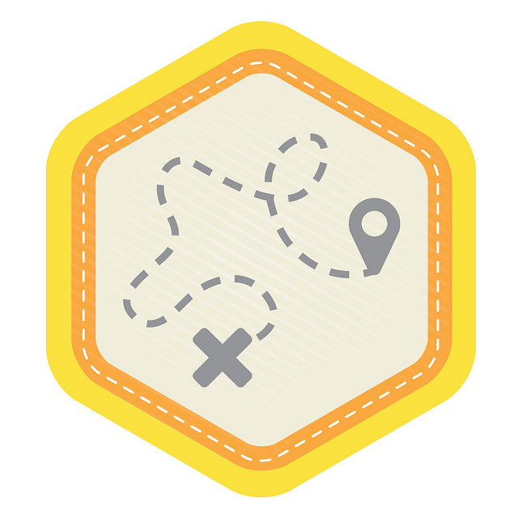

Privacy Basics
Engage your learners around the topic of privacy and help them understand how to take control of their privacy in a networked world. Informed by Mozilla's Web Literacy Map.
-
Preparation
Review the activities below and decide which ones you'd like to use. Set up a discussion space your learners to share their learning and reflect on the web. Introduce yourself in the same discussion space, so we can support you better!
1. Reading the Web
See how educators adapted and commented on these activities. Special thanks to Hive Toronto and the Mozilla Privacy Team for seeding the activities.
Activity A: IP Tracer
45
minsUnderstanding privacy

Activity B: Bad Password Collage
45
minsUnderstanding security

Reflection
Share your reflection about the testing process and the activities.
2. Writing the Web
See how educators adapted and commented on these activities.
Activity A: Data Trail Timeline
1
hrUnderstanding remixing, privacy
Activity B: Draw Secure Passwords
1
hrUnderstanding privacy and security
Reflection
Share your reflection about the testing process and the activities.
3. Participating on the Web
See how educators adapted and commented on these activities. Special thanks to Creative Commons, P2PU School of Open and WYNC Radio Rookies for seeding the activities.
Activity A: Web Chef
1
hrUnderstanding open practices

FINAL PROJECT
Activity B: Story of Us1
hrUnderstanding community participation
Complete 2 pre-activity questionnaires:
for you and for your learnersTry the activity on your own.
Then do it with your learners.Complete 2 post-activity questionnaires:
for you and for your learners30
minReflection
Share your reflection about the testing process and the activities.
Need help?
We offer a variety of ways to ask questions, share reflections and find help:
- Ask a question in our discussion forum
- Write us on Twitter using the hashtag #teachtheweb.
- Email teachtheweb@mozillafoundation.org
Acknowledgements
We'd like to thank the individuals and organizations who contributed their knowledge and experiences to this curriculum. THANK YOU!

Unless otherwise noted, Web Literacy Basics by Mozilla is licensed under a Creative Commons Attribution 4.0 International License.